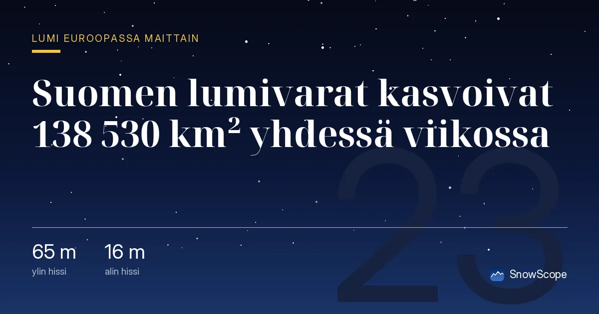

Suomen lumivarat kasvoivat 138 530 km² yhdessä viikossa
Suomen vuoret ovat keränneet lunta 157 360 neliökilometrin alueelle yhden viikon aikana kauden alkaessa: 138 530 km²:n kasvu merkitsee talvisen vesivaron avautumista. Tämä nopea siirtymä paljasta maasta puoliksi peitetylle maastolle osoittaa, kuinka nopeasti kosteat Atlantin ilmamassat voivat toimittaa sademäärää, kun lämpötilat vastaavat korkeutta.
Katso kohteen Kallin lumiennuste reaaliajassa SnowScope-sovelluksessaLumensyvyys, puuterihälytykset ja 3D-kartta, ilmaiseksi.
Nopea siirtymä
Tämä viikko näki yhden dramaattisimmista muutoksista suomalaisissa vuoren lumipeitteiden varhaiskauden muutoksissa: hyppy 18 830 km²:sta viime maanantaina 157 360 km²:ään tänään—kasvu 138 530 km²:n verran seitsemässä päivässä. Vesivaran hoitajille nopeus on yhtä tärkeä kuin kokonaismäärä. Kun lumi kertyy näin nopeasti eri korkeuksille, sen tiheys ja vakaus vaihtelevat merkittävästi, koska lumella ei ole aikaa laskeutua ja sitoutua alapuolisiin kerroksiin.
Varhaisen kauden lumi on usein ohut ja paikittainen. Alle 500 metrin korkeuksilla lumipeite on vajaa—vain 52 prosenttia maastosta on lumipeitteinen—ja kivet ja kasvillisuus kurkottavat sen läpi. Missä lumi pysyy, se edustaa makeanveden varastoa, joka vapautuu vähitellen maaperään ja purouomiin, kun lämpötilat nousevat ja paketti laskeutuu talven aikana.
| Hiihtokeskus | Lumensyvyys | Uusi lumi, 72 h | Tulossa, seuraavat päivät | Huippu |
|---|---|---|---|---|
| Kallin | 23 cm | 6 cm | 13 cm | 65 m |
| Salla | 21 cm | 16 cm | 10 cm | 462 m |
| Rukatunturi | 19 cm | 15 cm | 10 cm | 494 m |
| Kiririnteet | 18 cm | 14 cm | 11 cm | 385 m |
| Pyhä | 18 cm | 12 cm | 13 cm | 375 m |

Paljasta maasta talveen
Progressio kertoo talvisen vesivaran laajenemisen tarinan. Seitsemän päivää sitten vain 18 830 km²:lla oli lunta; eilen 177 290 km² oli kertynyt; tänään 157 360 km² pysyy peitettynä paikoin yöllä tapahtuneen sulamisen jälkeen.
Kallin, viidestä mitatusta hiihtokeskuksesta korkein, johtaa 23 cm:llä—huomattavasti normaalia 4 cm:ä enemmän marraskuulla—mikä vihjaa, että ensimmäinen lumipeite säilyy korkeuksilla tulevien vaihteluiden läpi. Ruka-tunturit pohjoisemmalla keräsivät voimakkaimmista lumisateista viimeisten 72 tunnin aikana ja tallensivat 16 cm:ä yhdessä asemapisteessä. Tämä mittaus heijastaa, kuinka paikallinen altistus, tuulen suunta ja aspekti muovaavat sitä, mikä kertyy monimutkaiseen maastoon.

Lumi korkeammilla korkeuksilla
Suomen pystysuuntainen gradientti paljastaa, missä vesi on varastoitu tehokkaimmin. 500–1 000 metrin korkeuksien välillä 97 prosenttia maastosta on nyt 12 cm:n keskisyvyydellä—lähes jatkuva peite huolimatta viimeaikaisista ilmakehän vaihteluista. 1 000 metrin yläpuolella kuva paranee huomattavasti: täydellinen peite 38 cm:n keskisyvyydellä, riittävä pysyäkseen vakaana varhaiskauden lämpötilan vaihteluiden läpi.
Alle 500 metrin korkeuksilla vain 52 prosentin peite 4 cm:n keskisyvyydellä tarkoittaa, että monissa alemmissa laaksoissa ja alttiissa rinteissä lumi pysyy vaarassa sulaa, jos lämpenemistä tapahtuu tulevina päivinä. Nollaraja sijaitsee tällä hetkellä 200 metrin korkeudella, merkitsee kynnystä, jonka alapuolella sade tuli sateena eikä lumina viimeisten myrskyjen aikana.
Uusi lumi ja jakautuminen
Viimeisten 72 tunnin aikana maksimissaan 11 cm:n verran uutta lunta missään mitatussa paikassa, 24:stä Suomen 67 kartoitetusta hiihtokeskuksesta nyt rekisteröity jonkinlainen lumipeite. Pohjoisessa Ruka-tuntureiden ympäristöön keskittynyt lumisade—mukaan lukien Rukatunturi 19 cm:n syvyydessä ja 15 cm:n uudella lumella ja Kiririnteet 18 cm:n syvyydessä ja 14 cm:n uudella lumella—hyötyi ohjaavista ilmavirroista, jotka työnsivät kostean ilman pohjoiseen.
Samalla aikavälillä Kallin keräsi vain 6 cm:n uutta lunta mutta säilyttää syvimmän paketin. Tämä ero korostaa varhaiskauden monimutkaisuutta: sama säähysteemi toimittaa hyvin erilaisia määriä topografiasta ja paikallisesta lähentymisestä riippuen. Huomenna, 18. marraskuuta, ennustetaan viikon lumisimpänä päivänä 8 cm:n verran, vaikka tämä pysyy mallin arviona, joka on alttiina ajoituksen siirroille.
Varhaisen kauden johtajat
Kallin on 23 cm:llä, lähes kolme kertaa sen tavallinen 4 cm:n syvyys marraskuulla, säilyttäen selvän edun alueella. Salla seuraa 21 cm:llä, yli tavallisen 16 cm:nsä marraskuulla, kun taas Rukatunturi ja Kiririnteet keräytyvät lähelle 18–19 cm:ä. Kaikki viisi suurta hiihtokeskusta, joita täällä seurataan, ylittävät tavallisen marraskuun lumensyvyyden, Kallin 325 prosentin keskiarvolla.
Nämä syvyydet edustavat vakaata pohjaa kauden avaamiselle, vaikka ne jäävät kohtuullisen pieniksi verrattuna siihen, mitä kertyy talven syventyessä. Mittausepävarmuus tässä vaiheessa on huomattava: ohut varhaisen kauden lumi uudelleenjakautuu nopeasti tuulen kanssa, ja yksittäinen syvyysmittaus esittää vain yhden paikan historiaa, ei olosuhteita lähistöllä olevissa rinteissä, joilla on erilaisia aspekteja tai altistusta.
Mitä tulee seuraavaksi
Seuraavat kolme päivää tuovat satunnaista lunta, mahdollisesti enintään 11 cm:n verran 19. marraskuuta saakka, kun matalapaineinen järjestelmä liikkuu alueella. Sen jälkeen sääkuvio muuttuu: loppumarraskuussa (24.–30. marraskuuta) odotetaan vain 3 cm:n verran uutta lunta, mikä vihjaa kuivemman kauden mahdollisuudesta.
Ennusteepävarmuus kasvaa seitsemän päivän jälkeen. Vesienhallinnolle, joka arvioi vuoristovarastoja ja kevätalueintaa, kriittinen kysymys on nyt, säilyykö tämä marraskuun lumi joulukuun raskaamman kertymisen alkuun saakka vai aiheuttaako lämmin kausi merkittävää sulantaa. Yli 1 000 metrin korkeuksilla oleva maasto todennäköisesti säilyttää peitteensä, mutta alempien laaksojen ja alttiiden rinneet voivat nähdä huomattavaa vaihtelua.
Vinkkejä laskijoille
- Siirry korkeammille korkeuksille, joissa lumi on varma: yli 1 000 metrin korkeuksilla täydellinen 38 cm:n peite, kun alle 500 metrin korkeuksilla vain 52 prosenttia maastosta on lumipeitteinen, keskisyvyys noin 4 cm.
- Huomenna (18. marraskuuta) ennustetaan viikon lumisimpänä päivänä—varaa aikaa vuorille, jos sää sallii.
- Huomioi hautautunut kallio ja harva lumipeite alemmissa laaksoissa; varhaisen kauden peite pysyy ohuena ja katkonaisena alle 500 metrin korkeuksilla.
- Yksittäiset syvyysmittaukset kuvaavat vain yhtä paikkaa; todelliset olosuhteet vaihtelevat merkittävästi lähistöllä olevissa rinteissä, joilla on erilaisia aspekteja ja tuulen altistusta.
- Tarkista virallinen lumivyöryennuste ennen off-piste hiihtämistä, erityisesti jyrkillä maastoilla, joissa varhaisen kauden lumensidonta on epävarma.
Näistä luvuista
Hiihtokeskusten lumensyvyydet ovat syvin lumi keskuksen ylärinteillä SnowScopen lumimallin mukaan (noin 1 km, ajo 16. marraskuuta); ne ovat arvioita alueelle, eivät mittaus yhdessä pisteessä. Asemien arvot ovat mittauksia näytettynä päivänä. Ennusteet voivat muuttua. Lue aina virallinen lumivyöryennuste ennen rinteiden ulkopuolelle lähtöä.
Viittaa tähän raporttiin
Tutkimukseen, opetukseen tai mediaan: luvut ja kaaviot ovat vapaasti käytettävissä CC BY 4.0 -lisenssillä tällä lähdeviitteellä.
SnowScope (2026), Suomen lumivarat kasvoivat 138 530 km² yhdessä viikossa, https://snowscope.app/blog/fi/2026/11/finland-snow-report-16-november-2026.html, luettu 2026-11-16
SnowScope (Atlas Labs). (2026, November 16). Suomen lumivarat kasvoivat 138 530 km² yhdessä viikossa. SnowScope snow reports. https://snowscope.app/blog/fi/2026/11/finland-snow-report-16-november-2026.html
BibTeX
@misc{snowscope2026finlandsnowreport16novem,
author = {{SnowScope (Atlas Labs)}},
title = {Suomen lumivarat kasvoivat 138 530 km² yhdessä viikossa},
year = {2026},
month = nov,
howpublished = {\url{https://snowscope.app/blog/fi/2026/11/finland-snow-report-16-november-2026.html}},
note = {Published 2026-11-16 20:42 UTC; accessed 2026-11-16}
}· CC BY 4.0 · Menetelmät, data ja työkalut →
Kallin: lumi ja lämpötila korkeuden mukaan, tämä talvi ja viime talvi (työkalut) →
Seuraa: Kallin
Ilmainen: viesti, kun uutta lunta on tulossa, ja ennuste joka aamu.